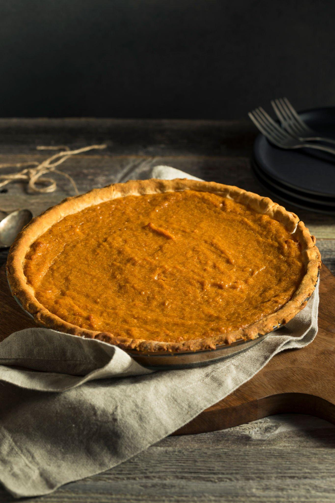

Ingredients
For the Pie Crust
1 1/4 cups all-purpose flour
1/2 cup unsalted butter, chilled and diced
1/4 teaspoon salt
3-4 tablespoons ice water
For the Filling
2 cups cooked and mashed sweet potatoes (about 3 medium sweet potatoes)
3/4 cup packed brown sugar
1/2 cup granulated sugar
1/2 teaspoon salt
1 teaspoon ground cinnamon
1/2 teaspoon ground nutmeg
1/4 teaspoon ground ginger
1/4 teaspoon ground cloves
3 large eggs
1 cup evaporated milk
1 teaspoon vanilla extract

Instructions
1.Prepare the Pie Crust
In a food processor, combine the flour and salt.
Add the chilled, diced butter and pulse until the mixture resembles coarse crumbs.
Gradually add ice water, 1 tablespoon at a time, and pulse until the dough comes together.
Gather the dough, shape it into a disc, wrap it in plastic wrap, and refrigerate for at least 30 minutes.
2.Preheat the Oven
Preheat your oven to 375°F (190°C).
3.Roll Out the Pie Crust
On a lightly floured surface, roll out the chilled pie crust to fit a 9-inch pie dish.
Press the crust into the pie dish, trim any excess, and crimp the edges.
4.Prepare the Filling
In a large mixing bowl, combine the mashed sweet potatoes, brown sugar, granulated sugar, salt, cinnamon, nutmeg, ginger, and cloves. Mix well.
In a separate bowl, whisk together the eggs, evaporated milk, and vanilla extract.
Add the egg mixture to the sweet potato mixture and mix until smooth and well combined.
5.Assemble and Bake
Pour the sweet potato filling into the prepared pie crust.
6.Bake
Bake the pie at 375°F (190°C) for 45-50 minutes or until the center is set and a knife inserted into the center comes out clean.
7.Cool and Serve
Allow the sweet potato pie to cool completely before slicing. You can serve it at room temperature or chilled
Enjoy your delicious homemade sweet potato pie!😋